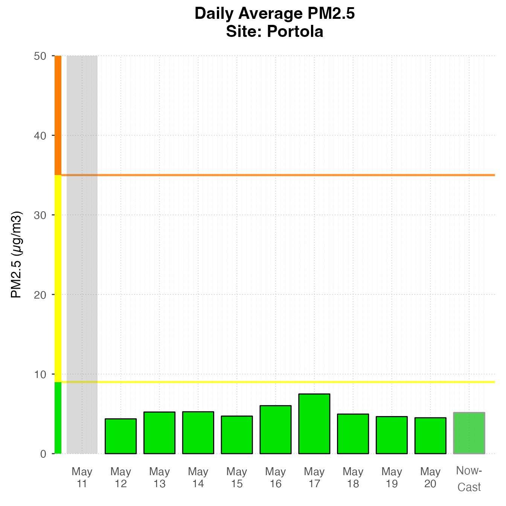
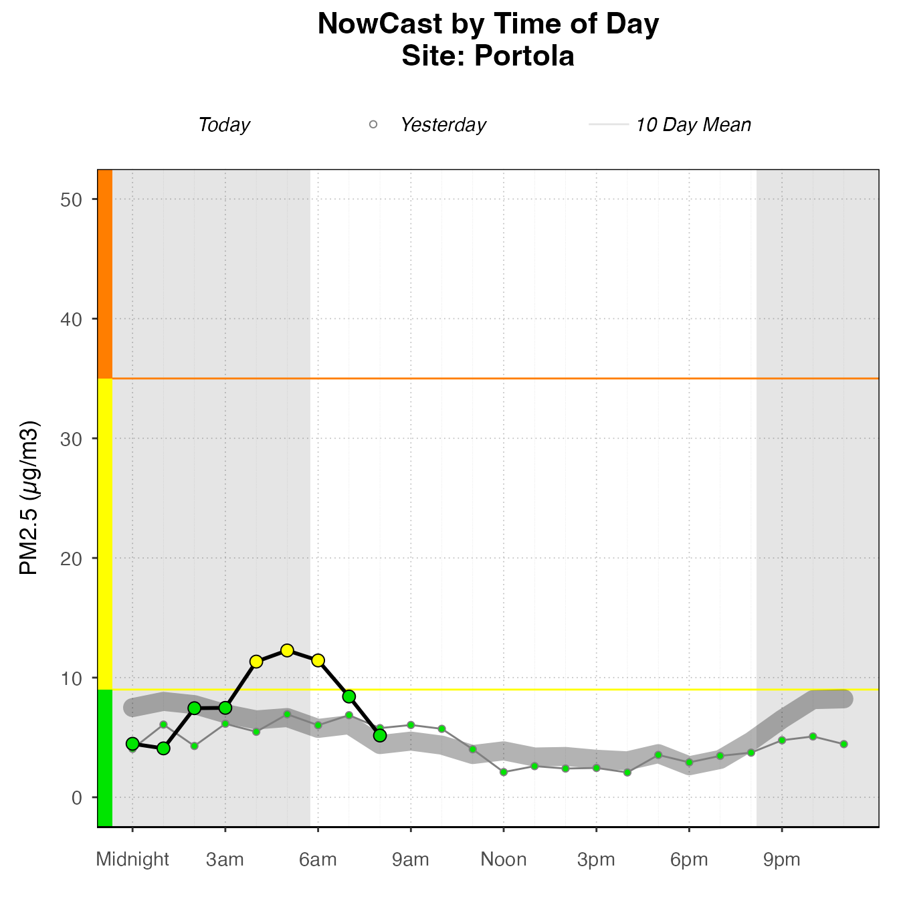
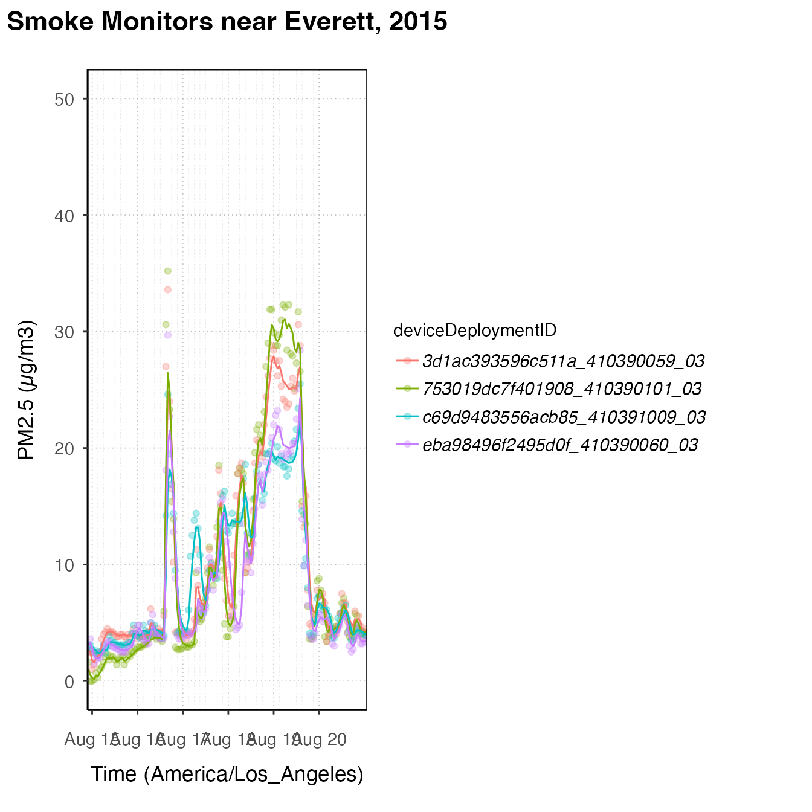
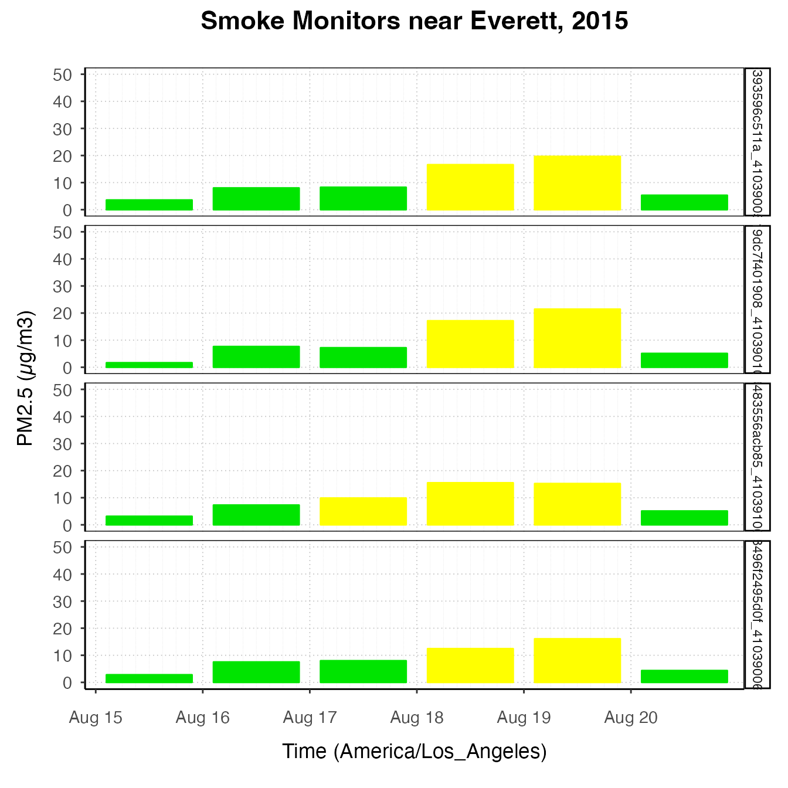
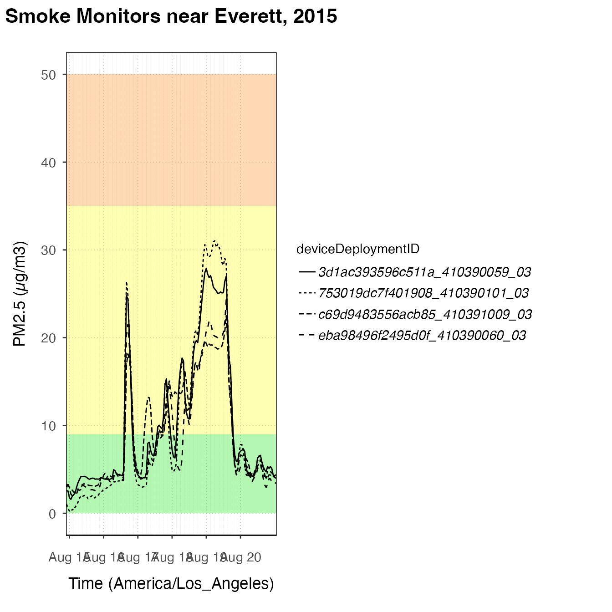
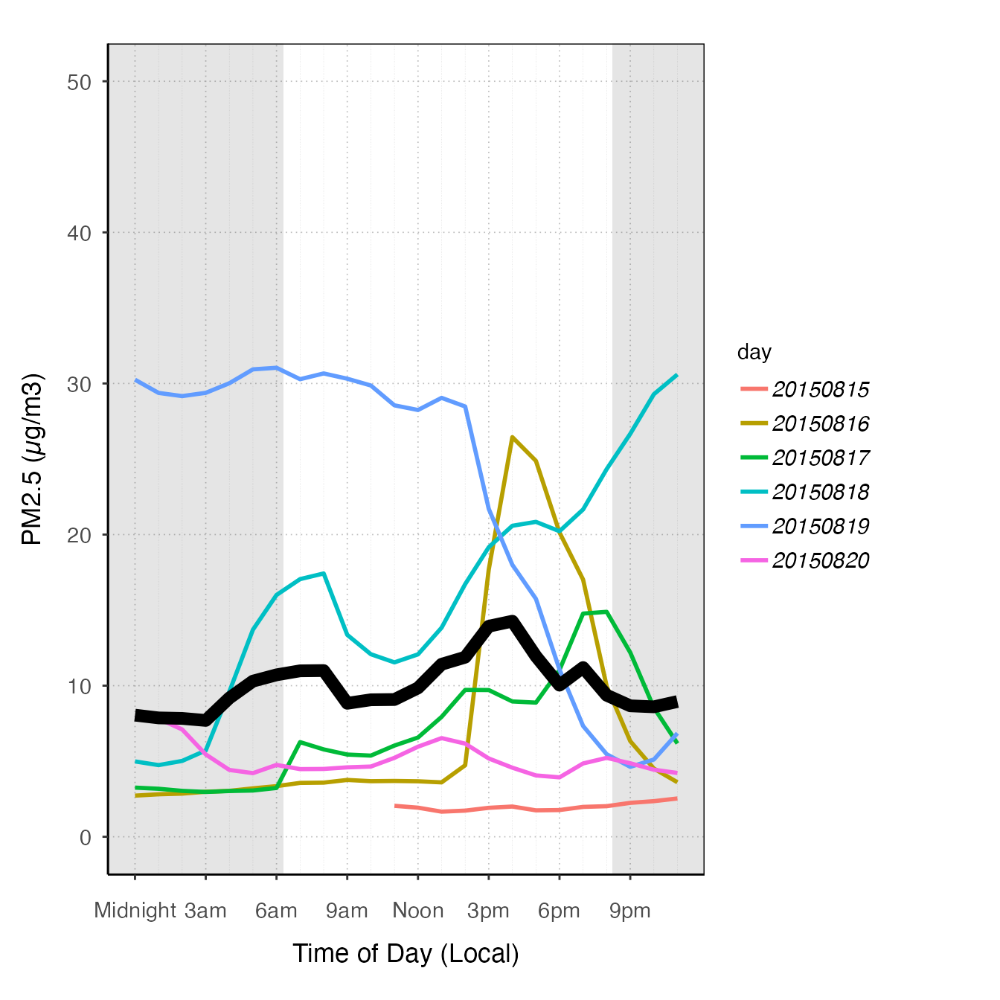
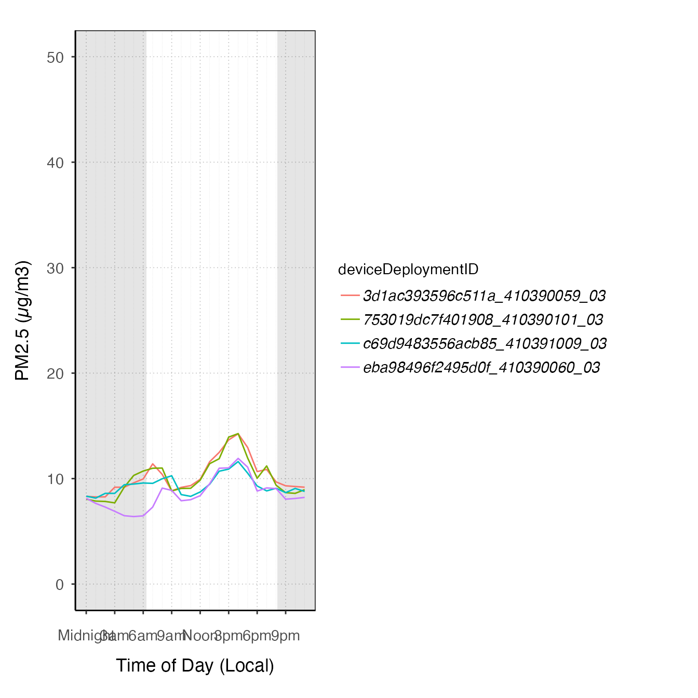

Plot Gallery
Helen Miller, Jonathan Callahan
October 11, 2023
Source:vignettes/articles/plot_gallery.Rmd
plot_gallery.RmdThe AirMonitorPlots package provides plotting functionality to create production-ready plots for air quality monitoring data. It is designed to work with the AirMonitor package, integrating the data with ggplot2 plotting functions. High-level plotting functions make it easy for users to create beautiful plots of monitoring data. Since these functions are built on ggplot2, users familiar with ggplot2 can easily use the functions in this package to create custom plots.
Production-ready plots
High-level functions in this package make it easy to create beautiful plots with very few lines of code.
Timeseries
The default Timeseries plot is optimized for one monitor.
library(AirMonitor)
library(AirMonitorPlots)
monitor_ggTimeseries(
AirMonitor::NW_Megafires,
startdate = 20150815,
enddate = 20150825,
id = "753019dc7f401908_410390101_03"
)
If more than one monitor is present, color will be mapped to deviceDeploymentID.
monitor_ggTimeseries(
AirMonitor::NW_Megafires,
id = c(
"753019dc7f401908_410390101_03",
"3d1ac393596c511a_410390059_03",
"c69d9483556acb85_410391009_03",
"eba98496f2495d0f_410390060_03"
),
startdate = 20150815,
enddate = 20150820
)
Daily Barplot
Daily Barplot can show daily averages for one monitor.
AirMonitor::Carmel_Valley %>%
monitor_ggDailyBarplot(
startdate = 20160801,
enddate = 20160810
)If using current data, it will include a bar for “today”, displaying the current NowCast, if available.
latest <- airnow_loadLatest()
monitor_ggDailyBarplot(
latest,
startdate = lubridate::now() - lubridate::ddays(7),
id = "67d1d0fc965cb106_840060631010"
)
Daily By Hour
The dailyByHour plot is designed to view current data
for only one monitor. It can show daily trends in air quality.
monitor_ggDailyByHour(
latest,
id = "67d1d0fc965cb106_840060631010"
)
The dailyByHour is designed specifically to show current
data, with special lines for “today” and “yesterday”. However, it can
plot historical data, using the enddate for “today”.
monitor_ggDailyByHour(
AirMonitor::Carmel_Valley,
startdate = 20160801,
enddate = 20160809
)
Custom Plots
High-level plotting functions create plots by adding custom layers
and styling, returning a ggplot object. The package extends
ggplot2, including custom geoms, stats, and themes, as
well as some custom functions which combine layers and other styling
options to make consistent and appropriately styled plots. A plot can be
instantiated with a ggplot_~() function. Choose the correct
function, depending on the type of plot. Then, layers and styling can be
added with functions from this package or ggplot2
functions. This section demonstrates how these pieces work together, and
shows some examples of the kinds of custom plots that can be made using
this functionality.
pm25Timeseries plots
The most basic type of plot for monitoring data is timeseries plots –
plots that have time on the x-axis and PM2.5 on the y-axis. Timeseries
plots should start with a call to ggplot_pm25Timeseries(),
which accepts either a mts_monitor object, or a
ws_tidy object, created with
monitor_toTidy(mts_monitor). This instantiates the plot
mapping the data to the correct axes, and adds some custom styling and
scaling.
Many Monitors
nmPlot <-
ggplot_pm25Timeseries(
NW_Megafires,
startdate = 20150815,
enddate = 20150825
) +
ggtitle("2015 Northwest Megafires")
nmPlotOnce the plot is initiated, you can add layers.
nmPlot +
geom_pm25Points(shape = "square", alpha = .1) +
stat_dailyAQCategory(alpha = .5) +
scale_y_continuous(limits = c(0, 500)) +
custom_aqiStackedBar(width = 0.01)
nmPlot +
geom_pm25Points(alpha = 0.05, shape = "square") +
stat_meanByHour(geom = "line", size = 2, output = "AQIColors")+
custom_aqiStackedBar()Several Monitors
# Select several monitors near Everett
deviceDeploymentIDs <- c(
"753019dc7f401908_410390101_03",
"3d1ac393596c511a_410390059_03",
"c69d9483556acb85_410391009_03",
"eba98496f2495d0f_410390060_03"
)
Everett <- AirMonitor::monitor_select(NW_Megafires, deviceDeploymentIDs)
EverettPlot <-
ggplot_pm25Timeseries(
Everett,
startdate = 20150815,
enddate = 20150820
) +
ggtitle("Smoke Monitors near Everett, 2015")
EverettPlot +
geom_pm25Points(aes(color = deviceDeploymentID)) +
stat_nowcast(aes(color = deviceDeploymentID))
EverettPlot +
stat_dailyAQCategory(timezone = "America/Los_Angeles") +
facet_grid(rows = vars(deviceDeploymentID))
EverettPlot +
stat_AQCategory(color = NA) +
stat_dailyAQCategory(alpha = .5, timezone = "America/Los_Angeles") +
facet_grid(rows = vars(deviceDeploymentID))
EverettPlot +
custom_aqiStackedBar(width = 1, alpha = .3) +
stat_nowcast(aes(linetype = deviceDeploymentID))
EverettPlot +
custom_aqiLines() +
stat_nowcast(aes(linetype = deviceDeploymentID)) +
custom_pm25TimeseriesScales(Everett, startdate = 20150810, enddate = 20150820) pm25Diurnal plots
There are also some functions designed to create diurnal plots –
plots designed to show daily cycles. They should start with a call to
ggplot_pm25Diurnal().
One monitor
This type of plot is best suited for exploring one monitor, although
a savvy ggplot2 user could certainly create useful and
attractive diurnal plots representing multiple monitors. Like
ggplot_pm25Timeseries(), ggplot_pm25Diurnal()
simply instantiates the plot without adding any layers yet. By default,
it includes day/night shading, although this can be turned off by
specifying shadedNight = FALSE.
deviceDeploymentID <- "753019dc7f401908_410390101_03"
Eugene_monitor <- monitor_select(NW_Megafires, deviceDeploymentID)
ggplot_pm25Diurnal(Eugene_monitor)After instantiating the plot, you can add layers.
stat_meanByHour is a stat specifically designed for this
type of plot, which calculates the mean y-value for each x-value. You
can also use the ‘group’ aesthetic to tell a stat to do calculations by
a group such as hour or day. There is also an offsetBreaks
option, which, if TRUE, will offset the x-axis guides and
ticks by 0.5, which is useful for plots like boxplots where you might
want the boxes to be between the hour ticks instead of lined up with
them. For example:
# offsetBreaks = FALSE. Notice that bars cover the x-axis guides
ggplot_pm25Diurnal(AirMonitor::Carmel_Valley,
startdate = 20160801,
enddate = 20160810) +
stat_meanByHour(output = "AQIColors")
# offsetBreaks = TRUE
ggplot_pm25Diurnal(AirMonitor::Carmel_Valley,
startdate = 20160801,
enddate = 20160810,
offsetBreaks = TRUE) +
stat_meanByHour(output = "AQIColors")Other examples
ggplot_pm25Diurnal(AirMonitor::Carmel_Valley,
startdate = 20160801,
enddate = 20160810,
offsetBreaks = TRUE) +
geom_boxplot(aes(group = hour)) +
custom_aqiStackedBar()
ggplot_pm25Diurnal(Eugene_monitor,
startdate = 20150815,
enddate = 20150820) +
stat_nowcast(aes(color = day), geom = "path", size = 1) +
stat_meanByHour(geom = "line", size = 3) 
ggplot_pm25Diurnal(Everett,
startdate = 20150815,
enddate = 20150820) +
stat_meanByHour(aes(color = deviceDeploymentID), geom = "path")
# "clock" plot
ggplot_pm25Diurnal(Eugene_monitor,
startdate = 20150815,
enddate = 20150820,
offsetBreaks = TRUE,
xexp = c(1/46, 1/46)) +
coord_polar(start = pi) +
stat_meanByHour(aes(y = 75, xmin = 50), input = "pm25", output = "AQIColors", width = 1, color = adjustcolor("black", .2)) +
geom_pm25Points()
ggplot_pm25Diurnal(AirMonitor::Carmel_Valley) +
stat_nowcast(size = 5, alpha = .05, geom = "point")Extending the preset plots
All of the preset plots (tidy_gg...) generate ggplot
objects, so you can start with these and add more layers or customize
them by adding themes.
monitor_ggTimeseries(AirMonitor::Carmel_Valley,
startdate = 20160801,
enddate = 20160809) +
theme_classic()
monitor_ggDailyByHour(AirMonitor::Carmel_Valley,
startdate = 20160801,
enddate = 20160809) +
geom_line(aes(group=day), alpha = .5)
monitor_ggDailyBarplot(AirMonitor::Carmel_Valley,
startdate = 20160801,
enddate = 20160809) +
stat_nowcast(geom = "pm25Points")